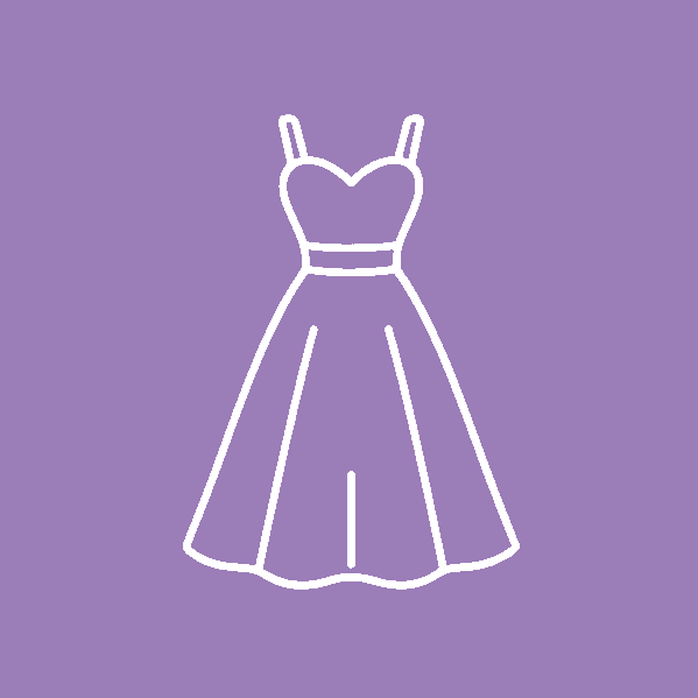
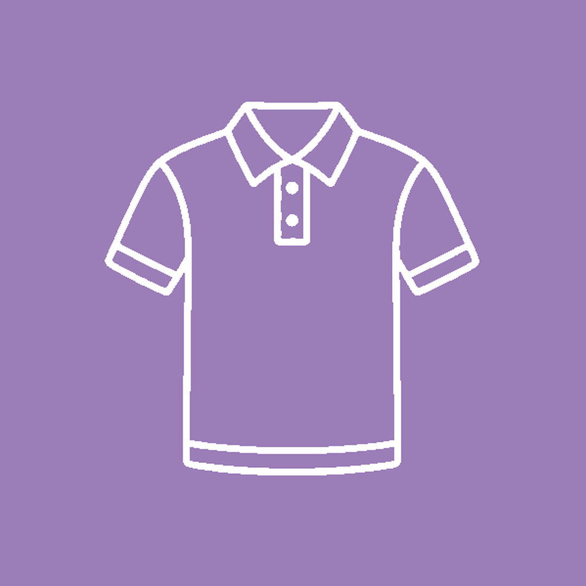
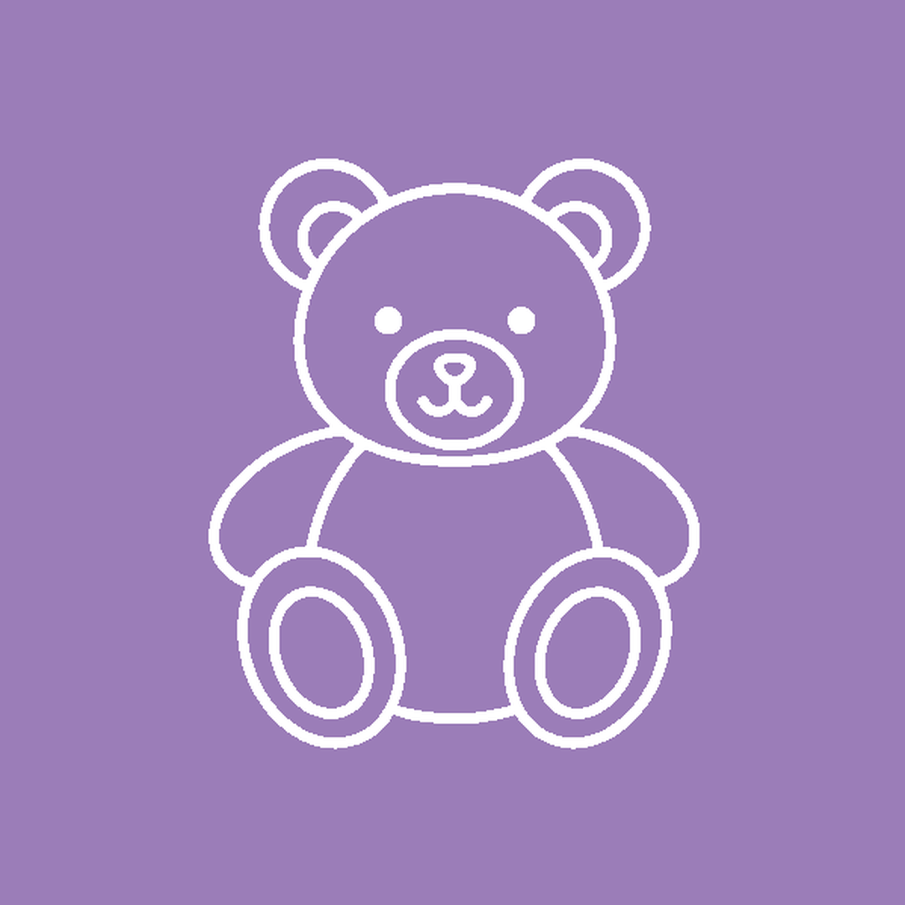
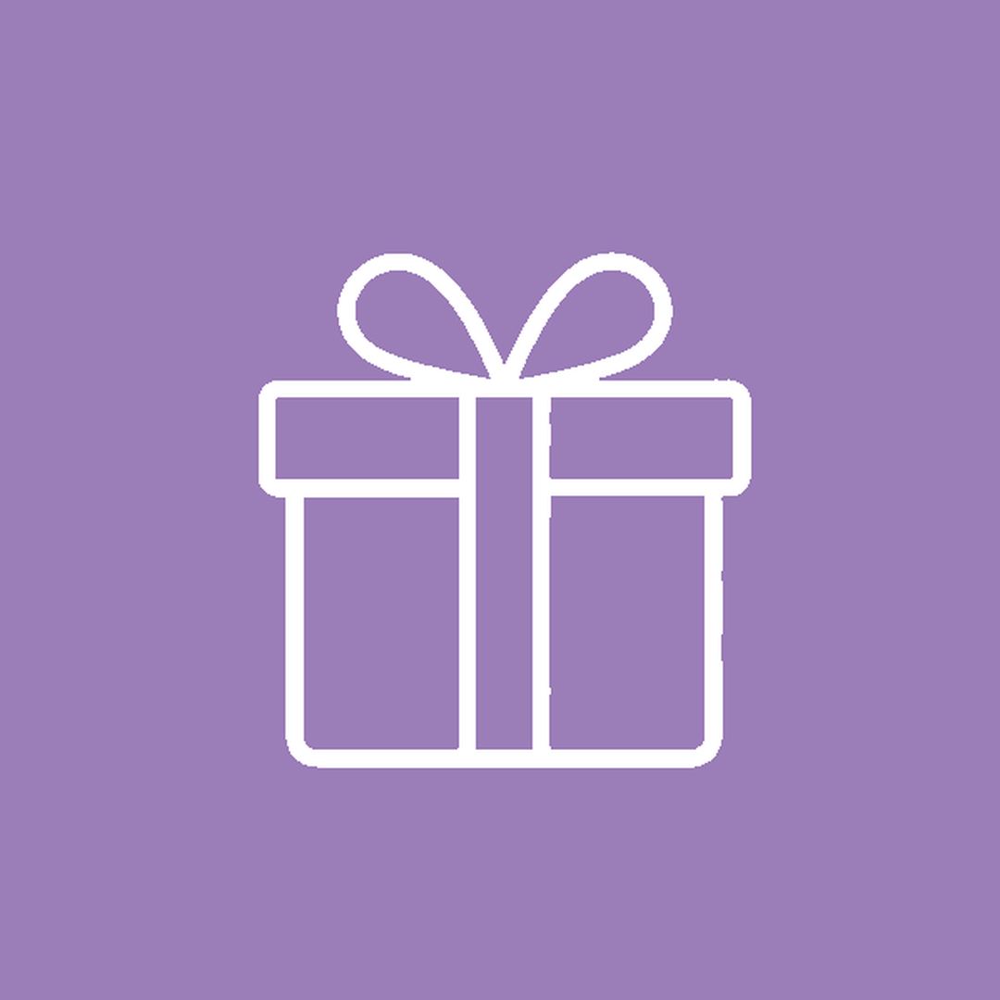
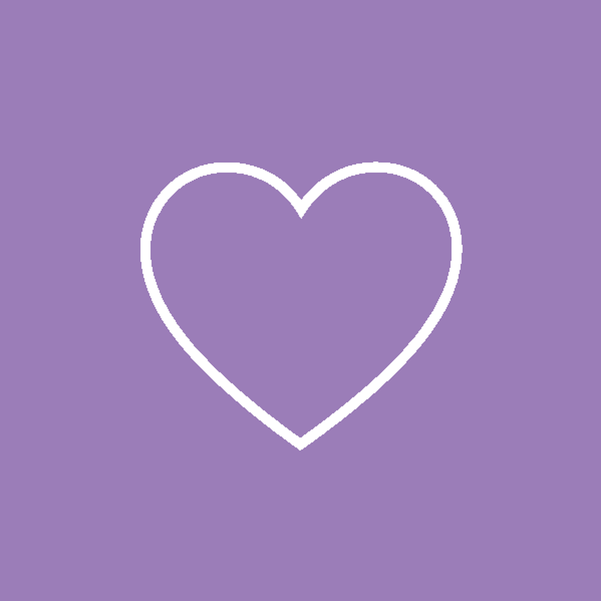

Analisamos o perfil @viviane.utilidades como uma cliente nova veria. Aqui está o que já funciona, o que precisa mudar e exatamente como mudar — passo a passo.
11 mil seguidores é uma base muito boa para uma loja de cidade do interior. O problema não é audiência — é que quem chega no perfil não entende em 3 segundos o que a loja vende, onde fica e como comprar.
O que já está bom
11 mil seguidores reais, da região
Já usa vídeos de produto (vestidos, saias, botas, cintos)
Já tem destaques organizados por tipo de produto
Já tem o lilás como cor da marca
Link do WhatsApp na bio (precisa de correção)
O que está atrapalhando
O nome do perfil é "Moda & Utilidades" — não tem "Viviane" nem a cidade
A bio diz "Sítio Grande | BA" — quem é de fora não sabe onde é
A bio não diz que tem 15 anos, nem que atende pelo WhatsApp
O link do WhatsApp está sem o código do Brasil (55) — pode abrir errado
Não aparece masculino, infantil nem presentes na bio
O que vamos fazer
Trocar nome e bio (5 minutos)
Corrigir o link do WhatsApp (2 minutos)
Reorganizar os destaques com capas lilás
Fixar 3 posts no topo do perfil
Ritmo de stories, posts e vídeos para outubro
1 — Nome do perfil
Quem procura "loja em São Desidério" precisa achar a Viviane
O Instagram tem dois campos: o @ (viviane.utilidades — não mexer) e o Nome, que aparece em negrito e é usado na busca. Hoje o Nome é só "Moda & Utilidades". Quando alguém pesquisa "Viviane" ou "São Desidério", a loja não aparece.
Hoje
Moda & Utilidades
Sem o nome da loja, sem a cidade.
Novo
Viviane Utilidades | São Desidério
Aparece na busca por "Viviane" e por "São Desidério". 34 caracteres (o limite é 64).
Como mudar: abrir o Instagram → Perfil → Editar perfil → campo Nome → apagar e colar o novo → Concluir. O Instagram só permite mudar o nome 2 vezes a cada 14 dias, então colar com cuidado.
2 — Biografia
Em 150 caracteres, a loja precisa se apresentar sozinha
A bio é o texto embaixo do nome. O Instagram deixa no máximo 150 caracteres. Quem chega pelo anúncio lê a bio em 3 segundos e decide se chama no WhatsApp ou vai embora. Hoje ela fala de "estilo, conforto e identidade" — bonito, mas não diz o que importa: o que vende, há quanto tempo, onde fica, como comprar.
Hoje
V
—posts
11 milseguidores
612seguindo
Moda & Utilidades
Loja de moda e acessórios
💜 Moda & acessórios • Sítio Grande | BA • Estilo, conforto e identidade • @vivianeutilidadesloja
wa.me/77999254343
Fala de "identidade", não fala de 15 anos, família, presentes nem WhatsApp.
Novo (opção recomendada)
V
—posts
11 milseguidores
612seguindo
Viviane Utilidades | São Desidério
Loja de roupas
💜 A loja que te conhece pelo nome há 15 anos
👗 Moda pra toda a família
🎁 Presentes e utilidades
📍 São Desidério-BA · WhatsApp 👇
wa.me/5577999254343
127 caracteres — cabe com folga nos 150.
As 3 opções de bio — escolher uma
Opção A — Recomendada
💜 A loja que te conhece pelo nome há 15 anos
👗 Moda pra toda a família
🎁 Presentes e utilidades
📍 São Desidério-BA · WhatsApp 👇
127caracteres
Usa a frase principal da campanha. Diz tudo: tradição, família, presentes, cidade, WhatsApp.
Opção B — Direta
💜 15 anos vestindo São Desidério
👗 Moda feminina, masculina e infantil
🎁 Presentes e utilidades
📍 Sítio do Rio Grande · WhatsApp 👇
130caracteres
Lista as três linhas de roupa. Boa se a loja quiser reforçar o masculino e o infantil.
Opção C — Com chamada
💜 A loja que conhece você pelo nome há 15 anos
👗 Moda pra família inteira · 🎁 Presentes
📍 São Desidério-BA
👇 Chama no WhatsApp
126caracteres
Termina com o pedido direto: "chama no WhatsApp". Boa para quem chega pelo anúncio.
Sobre o "@vivianeutilidadesloja" que está na bio hoje: marcar outro perfil na bio manda a pessoa para fora do @viviane.utilidades e gasta caracteres preciosos. Se for o perfil da segunda loja, o ideal é concentrar tudo em um perfil só (ver "Dúvidas" no fim da página).
Como mudar: Perfil → Editar perfil → campo Bio → apagar tudo → colar a opção escolhida (as quebras de linha vêm junto) → Concluir. Os emojis funcionam normalmente no celular.
3 — Link e botão do WhatsApp
O caminho até o WhatsApp precisa funcionar no primeiro toque
Todo anúncio e todo post vai mandar a pessoa para o WhatsApp. Se o link falhar, a venda morre ali.
Problema encontrado: o link da bio hoje é wa.me/77999254343. Faltou o 55 (código do Brasil). Em muitos celulares esse link abre uma tela em branco ou um número errado. Correção: wa.me/5577999254343.
Abre a conversa já com "Oi! Vim pelo Instagram 😊" escrito. A pessoa só aperta enviar — e a loja já sabe de onde ela veio.
Trocar o link da bio: Perfil → Editar perfil → Links → tocar no link antigo → apagar → colar o novo → título do link: "Chama no WhatsApp" → Concluir.
Ativar o botão "WhatsApp" do perfil:Editar perfil → Opções de contato → WhatsApp → informar o número (77) 99925-4343 e confirmar o código. Aparece um botão verde "WhatsApp" direto no perfil, ao lado de "Seguir".
Colocar o endereço no perfil:Opções de contato → Endereço → Rua Principal, S/N, Sítio do Rio Grande, São Desidério-BA. Aparece embaixo da bio com o mapa.
Se o botão do WhatsApp der erro ("Não foi possível conectar ao Instagram"), é o mesmo problema que a Ana já encontrou. Davidson está resolvendo pelo Gerenciador. Enquanto isso, o link corrigido da bio já resolve.
4 — Foto do perfil
Pequena, redonda e precisa ser lida de longe
A foto do perfil aparece do tamanho de uma moeda — nos stories, nos comentários, no anúncio. Precisa ser reconhecida de relance.
Regra 1 — Fundo lilás, letra branca
O lilás já é a cor da Viviane (está na capa do Facebook). A foto do perfil deve ser o nome "Viviane" em branco sobre o fundo lilás, sem detalhes pequenos.
Regra 2 — Só o essencial
Nada de endereço, telefone ou frase na foto. Só a marca. O que for pequeno demais some quando a foto encolhe.
Regra 3 — Igual em todo lugar
A mesma foto no Instagram, no Facebook, no WhatsApp Business e no Google. A pessoa reconhece a loja pelo lilás.
Pronta — foto de perfil nova
1080 × 1080, fundo lilás de cetim, "Viviane" em branco. Legível mesmo no tamanho de moeda. A Viviane recebe o arquivo no grupo e troca em 1 minuto: Perfil → Editar perfil → Editar foto.
Destaques são aqueles círculos abaixo da bio onde os stories ficam guardados para sempre. Hoje já existem (Clientes, Cestas, Masculino, Cintos, Rasteirinhas, Looks). A ideia é reorganizar: nomes mais claros, ordem que vende e capas todas iguais em lilás.
Ordem nova — da esquerda para a direita
✨
Novidades1º da fila
👗
Vestidoscarro-chefe
👕
Masculinojá existe
🧒
Infantilnovo
🎁
Presentesera "Cestas"
👜
Acessórioscintos + rasteirinhas
💜
Clientesjá existe
📍
Como chegarnovo
Destaque
O que vai dentro
Por que importa
Novidades
Os stories de "chegou peça nova" da semana. Trocar toda semana — tirar o antigo, colocar o novo.
É o primeiro círculo que a pessoa vê. Mostra que a loja está viva.
Vestidos
Os vestidos longos no manequim, com preço. Os 36 que a Viviane mandou já rendem isso.
É o produto que mais aparece e mais chama atenção da cliente.
Masculino
Polos, camisas Maresia, bermudas, bonés — com preço.
Mostra que não é loja só de mulher. Puxa o marido e o filho.
Infantil
Conjuntos e roupas de criança. Para o Dia das Crianças, colocar as opções de presente aqui.
Hoje não existe — e é a data do mês.
Presentes
O que era "Cestas". Cestas, kits, embalagens para presente.
"Presentes" é a palavra que a pessoa procura. "Cestas" é a palavra da loja.
Acessórios
Juntar "Cintos" e "Rasteirinhas" num só. Bolsas, bijuterias também.
Menos círculos, mais fácil de navegar.
Clientes
Fotos e vídeos de clientes com as compras, prints de agradecimento (com autorização).
Prova de que outras pessoas confiam. Quem está em dúvida decide aqui.
Como chegar
Vídeo curto da fachada, endereço, horário (seg-sáb, 8h-18h), número do WhatsApp.
Quem vem de fora ou pelo anúncio precisa saber onde é.
Prontas — as 8 capas em lilás
Novidades

Vestidos

Masculino

Infantil

Presentes
Acessórios

Clientes
Como chegar
Arquivos de 1080 × 1080 na pasta 02-CONTEUDO/instagram-kit/capas-destaques. Davidson manda os 8 no grupo; para trocar, siga o passo 2 abaixo.
Para renomear um destaque: segurar o dedo no círculo → Editar destaque → mudar o nome → Concluir.
Para trocar a capa:Editar destaque → Editar capa → ícone de imagem → escolher a capa lilás que a ADS enviou → Concluir.
Para criar um destaque novo (Infantil, Como chegar): postar o story normalmente → abrir o story → Destacar → Novo → dar o nome → Adicionar.
Para mudar a ordem: o Instagram coloca na frente o destaque que recebeu story mais recente. Para "Novidades" ficar sempre em primeiro, basta adicionar um story nele toda semana.
6 — Posts fixados
Três posts que ficam sempre no topo
O Instagram permite "fixar" até 3 posts no começo do perfil. Eles não descem quando a loja posta coisa nova. É o lugar certo para contar quem é a Viviane para quem acabou de chegar.
Fixado 1
"15 anos vestindo São Desidério"
Foto da fachada ou da Ana com a Viviane na loja. Legenda contando a história em 4 linhas: começou em 2009, duas lojas, atende pelo nome. Termina com "chama no WhatsApp".
Fixado 2
"Como comprar pelo WhatsApp"
Sequência de 4 imagens: 1) manda um oi, 2) a gente mostra as opções com preço, 3) escolhe e paga (Pix, cartão ou na loja), 4) retira ou recebe em casa. Simples e visual.
Fixado 3
"Novidades da semana"
Sequência com as peças que chegaram. Trocar toda segunda-feira: desafixar o antigo, fixar o novo. É o post que mais vai gerar mensagem.
Como fixar: abrir o post → três pontinhos (⋯) no canto superior direito → Fixar no seu perfil. Para tirar, mesmo caminho → Desafixar.
7 — Ritmo de publicação
Quanto postar para a loja ficar presente sem virar peso
Regra de ouro: frequência vale mais que perfeição. O celular da loja é o estúdio. A Viviane é a apresentadora.
Onde
Quanto
O que postar
Melhor horário
Stories somem em 24h
3 a 5 por dia
Peça nova na mão, preço, enquete "qual você prefere?", cliente na loja, bastidores da chegada de mercadoria
11h-12h e 18h-20h
Feed posts que ficam
1 por dia em outubro (depois 3-4 por semana)
Foto de produto com preço na legenda, sequências de imagens (carrossel), história da loja, cliente feliz
11h-12h
Reels vídeos curtos
2 a 3 por semana
Viviane mostrando 3 peças em 20 segundos, "qual você escolhe?", chegada de novidade, provador
18h-20h
Status do WhatsApp
Todo dia
Espelho dos stories: a mesma foto/vídeo, com preço e "chama aqui"
Manhã e fim de tarde
Os roteiros do que falar nos vídeos estão em uma página separada da Central ("Roteiros de Vídeo — Outubro"). Cada roteiro tem o que dizer, quanto tempo, e o que mostrar.
8 — Checklist de execução
O que fazer, em ordem
Marque conforme for fazendo. O progresso fica salvo neste navegador. Os itens "ADS" são entregas da ADS Company; os itens "LOJA" são para a Viviane fazer no celular.
Para confirmar com a Viviane
Três perguntas antes de aplicar
O @vivianeutilidadesloja é o perfil da segunda loja? Se for, sugerimos concentrar tudo no @viviane.utilidades (que já tem 11 mil seguidores) e deixar o outro perfil apenas com um post fixado dizendo "Siga @viviane.utilidades". Dois perfis dividem o esforço e a audiência.
Qual das 3 bios? Nossa recomendação é a A. Mas a escolha é da loja — todas cabem no limite.
Tem foto da fachada e das duas lojas? Precisamos para o destaque "Como chegar" e para o post fixado da história. Pode ser do celular, na hora de abrir a loja, com luz do dia.
ADS Company
Review do Instagram — Viviane Utilidades — Outubro 2026